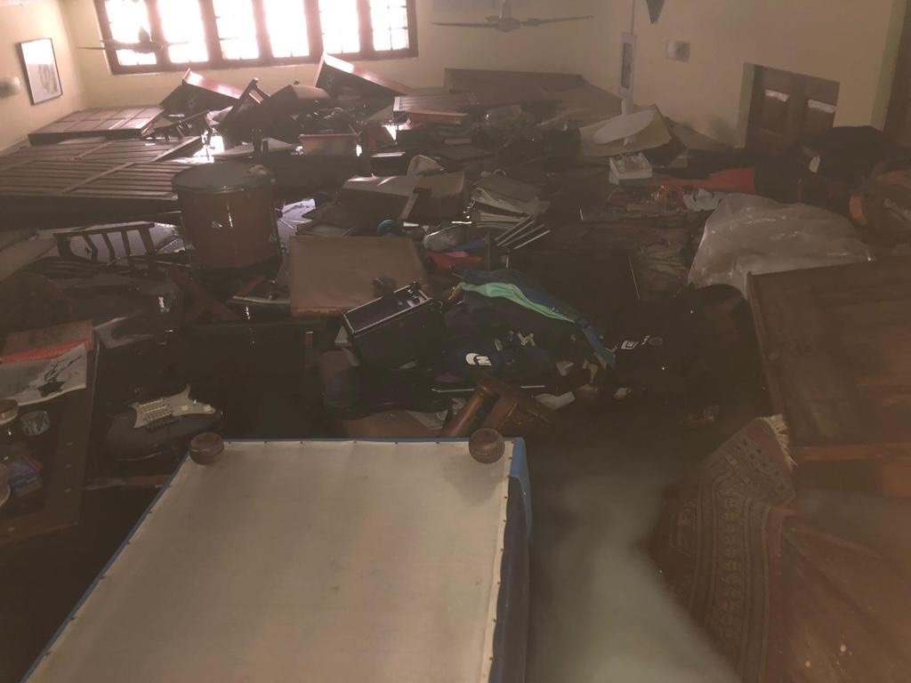
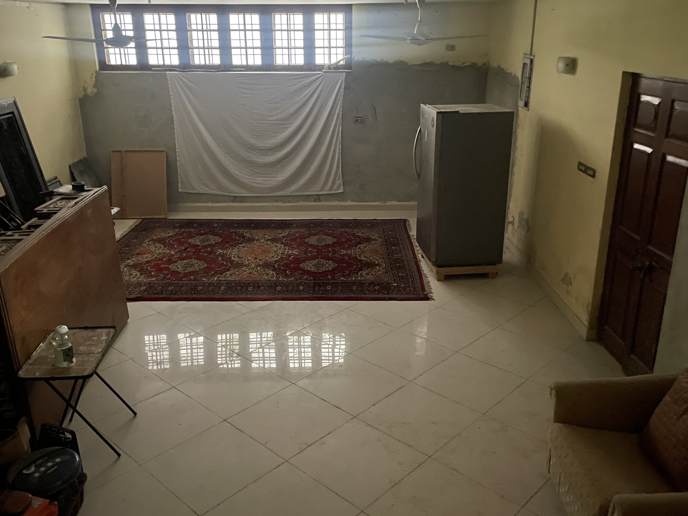

"We Were Here" is an ongoing project, dedicated to repurposing family photographs that were destroyed during the
2020 floods in Karachi.
The project reimagines lost memories through a series of collages composed of scanned images, accompanied by
flowing water animations. The centerpiece is an interactive installation that allows viewers to immerse
themselves in the floods through the artwork, connecting the audience to the essence of the narrative.
Could the memories that existed within these photographs find a way to survive through these altered forms?
The goal of this project is to explore this question, while also serving as a way for
me to come to terms with the sudden loss of those memories, and provide them with a proper farewell.
It is an exploration of loss, grief, family and the impermanence of memories, especially within the context
of climate change-induced trauma.
Our basement, typically a space for storage, was severaly affected by the flooding, with water
rising to nearly 9 feet. Among the items that were submerged were furniture, books, musical instruments, and most
significantly, almost all of our family photographs.
Many of these photographs did not have digital or physical copies, and were irreparably altered.

Image of our basement a few days after the rain subsided. (September, 2020)

Image of that same basement taken three years later. (September, 2023)
I chose the basement, where I recovered the photographs that inspired this project, as the location to display the interactive installation.
This allowed the viewer to engage with the reality of the flood in the place where the impact was most severe.
The animations below were used in the interactive installation. They were created by stitiching together several recovered photographs and scrolling through them, creating a endless loop. They were further processed using After Effects, TouchDesigner and GLSL to give the effect of flowing water, which the viewer could interact with through a Kinect camera.